ReSplat：学习循环式 Gaussian Splatting
《ReSplat: Learning Recurrent Gaussian Splatting》完整易读学术解析
读前导航
detach()，因此不能把它理解成对全部 recurrent 步完整展开的传统反向传播。输入、输出与核心假设
| 项目 | 内容 |
|---|---|
| 输入 | $N$ 张 RGB 图像、每张图的内参 $K_i$ 与外参 $(R_i,t_i)$；测试时输入图像本身仍可被当作反馈目标。 |
| 输出 | $M$ 个显式 3D Gaussian primitives：中心、opacity、协方差/尺度旋转以及 spherical harmonics，可由 gsplat 快速 rasterize。 |
| 压缩 | 多视图默认在 $1/4$ 深度网格上建点，$M=N\,HW/16$，相对逐像素 Gaussian 减少 $16\times$。 |
| 循环反馈 | 静态场景、已知相机、可渲染表示，以及“输入视图重建误差能指出当前 3D 表示的缺陷”。 |
| 最终能力 | 用同一模型在测试时选择 0–4 次更新，在速度与质量之间取舍，并借由反馈适应未见数据集、视图数与分辨率。 |
完整信息流
flowchart LR A["N 张 posed RGB 图像"] --> B["DepthSplat 式深度与图像特征"] B --> C["1/4 深度网格反投影
M = N·HW/16 个 3D 点"] C --> D["6 组交替 kNN / global attention"] D --> E["初始 Gaussian g⁰ 与隐状态 z⁰"] E --> F["渲染回输入相机"] F --> G["RGB 残差 + ResNet 特征残差"] G --> H["global attention 传播误差"] H --> I["4 个 kNN attention 更新块"] I --> J["Δgᵗ, Δzᵗ"] J --> K["gᵗ⁺¹, zᵗ⁺¹"] K --> F
推荐阅读路径
- 先看 Figure 2 与 Section 3，分清“初始化”和“循环更新”两套网络。
- 再看 Table 1 与 Figure 4，理解它与 per-scene optimization 的速度口径。
- 看 Figure 5、Table 2 和 Table 6(a)，判断提升究竟来自更大模型，还是来自测试时误差反馈。
- 最后读 Appendix 的压缩率、local kNN、profiling 与源码核对，理解可扩展性的真实边界。
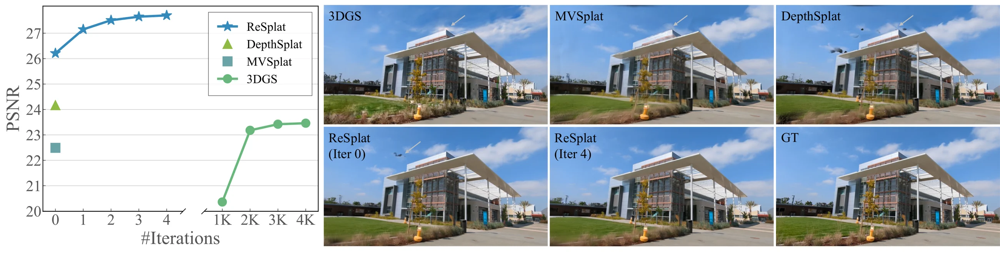
摘要逐项解析
摘要从 feed-forward Gaussian splatting 的优势出发：它避免每个场景数千次优化，但主流方法通常只做一次预测，对训练分布外数据、更多视图或不同分辨率的适应能力有限。作者把 per-scene optimization 的“逐步纠错”抽出来，改造成可以离线学习、在线前向执行的 recurrent update。
摘要覆盖的尺度很宽：2、8、16、32 个输入视图；$256\times256$ 到 $540\times960$；DL3DV、RealEstate10K 与 ACID。这里的“state of the art”应按各自表格限定：不同实验使用不同训练配置、Gaussian 压缩与比较方法，不能把一个 setting 的速度或参数量直接外推到全部 setting。
1. Introduction
本节任务
Introduction 建立三段论证：单步 feed-forward 模型快但容量受限；per-scene 3DGS 能迭代改进但每次都需显式梯度与数千步；因此应学习一个共享权重的更新规则，让少量 recurrent steps 在保持前向推理的同时吸收“迭代纠错”的优点。
作者特别强调 rendering error 的地位。普通 feed-forward 模型在测试时只读取输入图像一次，无法观察自己的输出哪里错了。ReSplat 把输出重新渲染到已知输入相机，于是预测结果与观测之间形成闭环。这个闭环既把大任务拆成多个小增量，也让更新器在未见分布上获得样本级反馈。
紧凑 Gaussian 数量是另一条必要条件。若沿用每个输入像素一个或多个 Gaussian，8 张 $512\times960$ 图就会形成约 393 万个 primitives，任何 3D 邻域更新都会非常昂贵。ReSplat 用 $1/4$ 深度图把数量降至约 24.6 万，再以 3D attention 补偿信息损失。
Introduction 报告的代表结果包括：在 DL3DV 的 8-view 高分辨率设置中，相对其 compact initialization，循环模型约提升 1.49 dB（26.21→27.70）；论文叙述中的约 3.5 dB 是与相邻 feed-forward/特定基线口径比较。16-view 设置比 Long-LRM 高 0.85 dB 且 Gaussians 少约 4 倍；两视图 RE10K/ACID 也达到表中最佳或接近最佳结果。
2. Related Work
本节沿三条技术谱系定位 ReSplat：feed-forward Gaussian reconstruction、learning to optimize，以及用于 view synthesis 的 learned refinement。作者的差异化不只是“也做迭代”，而是同时满足 compact feed-forward initialization、rendering-error feedback、共享权重多步更新与 scene-level evaluation。
2.1 Feed-Forward Gaussian Splatting
pixelSplat、MVSplat、GS-LRM、DepthSplat、Long-LRM、AnySplat、WorldMirror 与 YonoSplat 等工作把 posed images 直接映射为 3D Gaussians，绕开 3DGS 的逐场景优化。作者归纳出两个仍待解决的问题：其一，多数方法按输入像素产生一个或多个 Gaussian，数量随视图数和分辨率线性膨胀；其二，多数模型只做单步回归，复杂场景的质量受固定网络容量限制。
与 SplatFormer 的区别尤其重要：SplatFormer 对已经通过 3DGS 优化得到的 Gaussians 做一次非循环 refinement，主要针对 object-centric 数据；ReSplat 从图像直接得到 feed-forward initialization，再以 weight-sharing recurrent network 做多步更新，并明确把 rendering error 作为反馈。Appendix 的 scene-level 复现实验显示 SplatFormer 比 ReSplat 低约 2.04 dB，但作者也说明其网格归一化对无界场景难以调节。
2.2 Learning to Optimize
learned optimizer 的共同思想，是用共享网络模拟梯度下降的迭代结构：从初值开始，反复预测修正量。RAFT optical flow、RAFT-Stereo、scene flow、DROID-SLAM、MegaSaM、IterMVS 等说明，这类模型在对应关系、几何或状态估计上往往优于一次性回归，也常有更好的分布外表现。
许多视觉 recurrent models 使用 feature correlation volume 作为反馈；ReSplat 的关键替换是用可渲染表示天然提供的 observation residual。它并不学习通用优化器，而是学习“当前 Gaussian 参数 + latent state + 聚合渲染误差 → Gaussian 增量”的任务专用更新规则。
2.3 Learning to Optimize for View Synthesis
DeepView 用 learned gradient descent 更新 multiplane images；G3R 与 QuickSplat 也依赖显式计算出的梯度，前者还要求覆盖充分的初始 3D points。ReSplat 不需要预存 3D 点：初值来自 posed images，并且测试更新只读取前向得到的误差信号。LIFe-GOM 同样迭代更新 3D 表示，但对象是 human avatar 和 Gaussian–mesh 混合表示；ReSplat 面向一般场景的新视图合成。
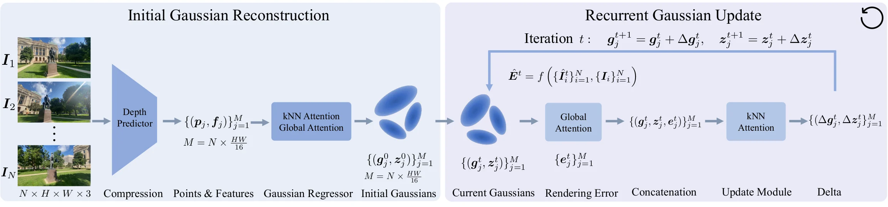
3. Approach
全局符号与坐标约定
| 符号 | 形状/类型 | 含义 | 坐标系或状态 |
|---|---|---|---|
| $I^i$ | $H\times W\times3$ | 第 $i$ 张输入 RGB | 像素/图像坐标，观测量 |
| $K^i$ | $3\times3$ | 相机内参 | 像素投影 |
| $(R_i,t_i)$ | $SO(3),\mathbb R^3$ | 外参 | 论文记号未在此句固定 world-to-camera 或 camera-to-world；代码批次使用 4×4 extrinsics 并在进入网络前统一变到参考相机坐标 |
| $p_j,\mu_j$ | $\mathbb R^3$ | 反投影点/Gaussian 中心 | 以中间输入视图为参考的全局 3D 坐标 |
| $g_j^t$ | $\mathbb R^{59}$ | 第 $t$ 轮 Gaussian 参数拼接 | 位置、opacity、scale/rotation 与 3 阶 SH；是被增量更新的显式状态 |
| $z_j^t$ | $\mathbb R^{C_0}$ | latent hidden state | 不直接渲染，携带初始化与历史更新信息 |
| $\hat e_j^t,e_j^t$ | $\mathbb R^{256}$ | 全局传播前/后的 rendering-error feature | 与 $1/4$ 多视图网格逐点对齐 |
问题定义
给定 $N$ 张 posed images，目标是预测 $\mathcal G=\{(\mu_j,\alpha_j,\Sigma_j,\mathrm{sh}_j)\}_{j=1}^{M}$。$\mu$ 是中心，$\alpha$ 是 opacity，$\Sigma$ 决定三维椭球形状，$\mathrm{sh}$ 是视角相关颜色。与隐式 radiance field 不同，这些 primitives 可以直接经 Gaussian rasterization 得到新视图。
方法把困难拆成两步：$F_0$ 负责“在一次前向中给出足够好的紧凑初值”，$U$ 负责“读取当前误差并作小步修正”。多视图默认 $M=N\,HW/16$；例如 8×512×960 得到 245,760 个 Gaussians，与 Table 1 的 246K 一致。
3.1 Initial Gaussian Reconstruction
本节的输入是图像和相机，输出是显式初始 Gaussian $g^0$ 及随后循环使用的隐状态 $z^0$。架构以 DepthSplat 为基础，但把逐像素生成改成强压缩点集，再引入 3D context aggregation 抵消质量下降。
Subsampled 3D Space
深度网络先产生全分辨率估计，再 resize 到 $H/4\times W/4$。每个低分辨率像素利用深度、内参与外参反投影成一个 3D 点，并附着从输入图像提取的特征 $f_j$。Small 模型 $C_0=256$，Base 模型 $C_0=512$。
执行顺序：图像编码与深度预测 → 深度降采样到 $1/4$ → 像素射线乘深度得到相机坐标点 → 用相机位姿变换到公共参考坐标 → 将同位置图像特征与点配对。高宽各降 4 倍，所以点数降 16 倍。
边界：如果深度偏差使中心点落错位置，后续更新只能在固定 Gaussian 数量上改参数，不能额外 densify；这也是结论中的首项限制。
Aggregating the 3D Context
直接从每个压缩点独立解码 Gaussian 会丢失局部表面连续性和跨视图一致性。作者交替使用六个 $k$NN attention 与 global attention blocks：前者在三维近邻间恢复局部几何，后者允许相隔较远、来自不同视图的点交换场景级信息。
位置 $p_j$ 在此阶段保持不变，变化的是特征 $f_j\mapsto f_j^*$。公式省略了六个 block 的内部层级；官方实现的 point transformer 在相对 3D 坐标上构造 attention，而 global branch 对更稀的 token 执行全局交互。
Decoding to Gaussians
3D 点本身被直接用作 Gaussian centers；两层 MLP Gaussian head 从 $f_j^*$ 解码其余属性。所有可渲染属性拼为 $g_j^0\in\mathbb R^{59}$，而 $f_j^*$ 原样初始化 hidden state：$z_j^0=f_j^*$。这样，显式参数承担当前可渲染场景，latent state 保留比 59 维低层参数更丰富的语义和局部结构。
这里的 $\mathcal G^0$ 比标准 3DGS 集合多了 $z^0$。渲染器只消费从 $g^0$ 拆出的 means、covariances、opacities 与 SH；recurrent updater 同时读取 $g^t$ 和 $z^t$。
3.2 Recurrent Gaussian Update
在第 $t\in\{0,\ldots,T-1\}$ 轮，模型不重新生成整套 Gaussians，而是预测参数与隐藏状态的残差。训练时 $T$ 在 1–4 之间随机采样；推理时可选不同 $T$。共享同一套更新权重，使单模型可以按预算增加 test-time compute。
直觉：更新器只需预测“还差多少”，而不必在每轮从头构造合法 Gaussian。残差形式也让零增量对应保持当前结果。
官方代码实现对传入下一轮的 Gaussian 参数执行 stop-gradient，并冻结用于误差提取的 ResNet-18。训练梯度用于学习当前更新网络和 supervision 分支，但不会无界地穿过之前所有 Gaussian 状态。
Computing the Rendering Error
当前 $g^t$ 先渲染出输入相机图像 $\hat I_i^t$。像素分支计算 $\hat I_i^t-I_i$，再用 pixel unshuffle 将空间 $4\times$ 下采样并把信息移入通道；特征分支把 rendered 与 ground truth 分别送入 ImageNet 预训练 ResNet-18 的前三个 stage，取得 $1/2$、$1/4$、$1/8$ 特征，统一双线性 resize 到 $1/4$ 后拼接为 256 通道，再相减。
proj 是线性投影加 LayerNorm，用来把 pixel-unshuffle 后的 RGB 残差对齐到 256 维 feature error。两者做逐元素加法，而不是 concat；Table 6(a) 显示 add 比 concat 高 0.14 dB。
为何需要两种误差：RGB 残差保留精确颜色与边缘错位，ResNet 特征对结构和局部语义更稳健。单独 feature error 已明显强于 RGB error，但两者相加最好。
Propagating the Rendering Error to Gaussians
虽然误差网格与 Gaussian 数量相同，但“同索引拼接”并不等价于正确 credit assignment：一个 Gaussian 可能投影到多个视图和多个像素，也可能因遮挡只在部分视图可见。作者不显式计算 rasterizer Jacobian，而是在全部误差 token 上做 global attention，让每个位置从全局残差中学习应关注的证据。
输入与输出 token 数相同，区别在于 $e_j^t$ 已聚合所有视图/位置的信息。为控制成本，实际 global attention 还会先 pixel-unshuffle 到 $H/16\times W/16$，计算后再 pixel-shuffle 回 $1/4$。
Recurrent Gaussian Update Module
每个点把当前显式参数 $g_j^t$、latent state $z_j^t$ 与传播后的误差 $e_j^t$ 拼接，再经过四个 $k$NN attention blocks。recurrent 模型用 $k=8$，比初始化的 $k=16$ 更强调局部细节；四层 MLP head 解码 Gaussian 增量，同时更新 hidden state。
Equation (7) 与 Equation (4) 合起来定义一次状态转移。论文观察四轮后收敛/饱和；这不是数学停止条件，而是训练范围与实验证据决定的实践上限。
3.3 Training Loss
训练严格分两阶段。第一阶段只学习 compact initialization；第二阶段冻结整个初始化模型，只训练 recurrent module。这样第二阶段面对稳定的 $g^0,z^0$ 分布，计算与显存也更可控。
$V$ 是每步监督的 target views，$N$ 是 context/input views。第一项直接约束新视图渲染，第二项只正则化输入视图预测深度，不要求 ground-truth depth。
$L_1$ 保持像素一致性，VGG feature-space perceptual loss 约束更高层结构。训练监督施加在 target views，而循环反馈误差来自可用的 context views，两者角色不同。
在图像平坦区，指数权重大，抑制无依据的深度振荡；在强图像边缘，权重下降，允许深度发生不连续。它是 edge-aware regularizer，不证明所有颜色边缘都对应几何边缘。
每个 recurrent prediction 都受监督，越靠后的轮次权重越高：当 $T=4$ 时四轮系数为 $0.9^3,0.9^2,0.9,1$。这防止模型只在最后一步才纠错，同时把最终质量作为主要目标。官方代码中第二阶段初始化 forward 位于 torch.no_grad()，并对前一步 Gaussian 状态做 detach；因此 Equation (11) 的多步监督不应被误读为完整 BPTT 穿过所有参数状态。
4. Experiments
实验回答五个问题：紧凑初始化是否仍有竞争力；少量 learned recurrent steps 是否优于数千步优化；反馈能否改善分布外泛化；收益能否由更大单步模型替代；各个误差、坐标系与 attention 组件是否必要。
Implementation Details
方法以 PyTorch 实现，初始化 point transformer 用 $k=16$，recurrent update 用 $k=8$。renderer 基于 gsplat 中的 Mip-Splatting 实现；优化器为 AdamW。损失权重固定为 $\alpha=0.01,\lambda=0.5,\gamma=0.9$。正文没有逐项列出 learning rate、batch size 或随机种子；公开配置与 Appendix 的训练 schedule 补足了阶段、步数和硬件，但复现仍需以指定 commit 的 YAML/脚本为准。
Efficient Global Attention
直接对 $N\times H/4\times W/4$ token 做二次复杂度 global attention 会随分辨率迅速膨胀。实现先用 pixel unshuffle 再降 $4\times$ 空间尺度，即在 $N\times H/16\times W/16$ token 上计算 attention，之后 pixel shuffle 恢复到 $1/4$。这是无参数的 reshape，不是丢弃像素；代价是细粒度空间信息被搬到通道中，由 attention 的投影层重新混合。
Efficient kNN
低于约 300K 点时默认使用 Pointcept 的定制 CUDA global kNN；其暴力候选搜索的理论复杂度为 $O(M^2)$，在更多视图/更高分辨率下成为瓶颈。作者另给 local kNN：同一视图取半径 $r_s=3$ 的 $7\times7$ 窗口，把 3D query 投影到其他相机后再取半径 $r_c=3$ 的窗口，最后只在固定大小候选集内按三维欧氏距离选 top-$k$，复杂度写为 $O(MC)$，常数候选数 $C$ 固定时即线性。
Model Sizes
| 模型 | 深度 backbone | 初始化 | 循环模块 | 总参数 | 用途 |
|---|---|---|---|---|---|
| ReSplat-Small | ViT-S | 62M | 15M（profiling 表中精确为约 13.8M） | 77M | 主要消融 |
| ReSplat-Base | ViT-B | 209M | 14M | 223M | 默认主结果 |
| ReSplat-Large | ViT-L | 559M | 未用于循环比较 | 559M | 测试“放大单步模型能否替代循环” |
Coordinate System
COLMAP 提供的世界坐标在不同场景中任意；而 3D update network 要直接读取 Gaussian centers，坐标分布会影响学习难度。作者把全部相机/点变换到输入序列的空间中心视图（顺序轨迹通常是 middle frame）坐标。这样最大相对位姿距离更均衡。Table 6(b) 显示 middle view 比原始 COLMAP 坐标高 0.93 dB，也优于 first/last view。
Evaluation Settings
| 设置 | 输入 | 数据集 | 比较重点 |
|---|---|---|---|
| 高分辨率多视图 | 8 views，$512\times960$ | DL3DV | 重新训练 3DGS、MVSplat、DepthSplat；质量、Gaussian 数、重建/渲染时间 |
| 大场景覆盖 | 16 views，$540\times960$ | DL3DV | 遵循 Long-LRM protocol，比较 full-scene reconstruction |
| 标准稀疏双视图 | 2 views，$256\times256$ | RealEstate10K；零样本 ACID | 与 pixelSplat、MVSplat、DepthSplat、GS-LRM、Long-LRM、LVSM 比较 |
| 附录规模变化 | 8/16/32 views，$256\times448$ | DL3DV | 与 4000-step 3DGS 比较 view-count scaling |
注意：不同表的输入图像、测试视图范围、模型 checkpoint 与 Gaussian 配置不完全相同，跨表直接相减不构成公平对比。
4.1 Main Results
Table 1：DL3DV，8 views，$512\times960$
| 方法 | 类别 | 迭代 | PSNR ↑ | SSIM ↑ | LPIPS ↓ | #Gaussians | 重建时间(s) | 渲染时间(s) |
|---|---|---|---|---|---|---|---|---|
| 3DGS | Optimization | 1000 | 20.36 | 0.667 | 0.448 | 9K | 15 | 0.0001 |
| 3DGS | Optimization | 2000 | 23.18 | 0.763 | 0.269 | 137K | 31 | 0.0005 |
| 3DGS | Optimization | 3000 | 23.42 | 0.770 | 0.232 | 283K | 50 | 0.0008 |
| 3DGS | Optimization | 4000 | 23.46 | 0.770 | 0.224 | 359K | 70 | 0.0009 |
| MVSplat | Feed-Forward | 0 | 22.49 | 0.764 | 0.261 | 3932K | 0.129 | 0.0030 |
| DepthSplat | Feed-Forward | 0 | 24.17 | 0.815 | 0.208 | 3932K | 0.190 | 0.0030 |
| ReSplat | Feed-Forward | 0 | 26.21 | 0.842 | 0.185 | 246K | 0.311 | 0.0007 |
| ReSplat | Feed-Forward | 1 | 27.15 | 0.859 | 0.169 | 246K | 0.437 | 0.0007 |
| ReSplat | Feed-Forward | 2 | 27.51 | 0.865 | 0.163 | 246K | 0.563 | 0.0007 |
| ReSplat | Feed-Forward | 3 | 27.65 | 0.867 | 0.161 | 246K | 0.689 | 0.0007 |
| ReSplat | Feed-Forward | 4 | 27.70 | 0.868 | 0.160 | 246K | 0.816 | 0.0007 |
Table 1 同时说明初始化与 refinement。迭代 0 已比 DepthSplat 高 2.04 dB，说明 compact 3D context regressor 本身有效；四轮再增加 1.49 dB。Gaussian 数始终固定 246K，是逐像素 MVSplat/DepthSplat 的 $1/16$，渲染时间约快 4.3 倍。相对 4000-step 3DGS，重建时间 0.816s 对 70s，约 85.8 倍；论文将不同配置下的总体趋势概括为约 $100\times$。
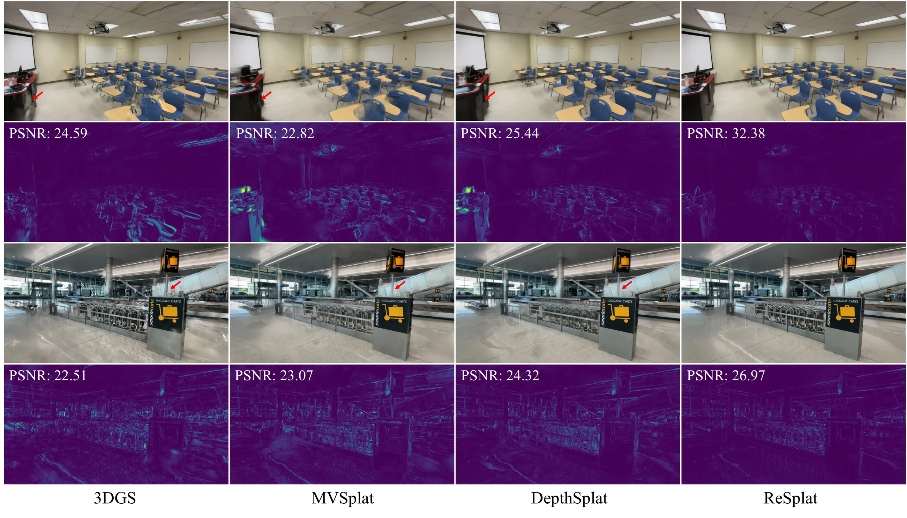
8-view 高分辨率结论
控制输入视图与分辨率后，ReSplat 同时改善 PSNR/SSIM/LPIPS，并大幅减少 Gaussian 数。其重建时间比一次性 MVSplat/DepthSplat 更长，因为需深度、3D attention 与 recurrent steps；优势主要是仍远快于 optimization，同时显式表示的渲染更快。四轮以后边际增益从第一轮的 +0.94 dB 降到第四轮的 +0.05 dB，直接预示“迭代饱和”的限制。
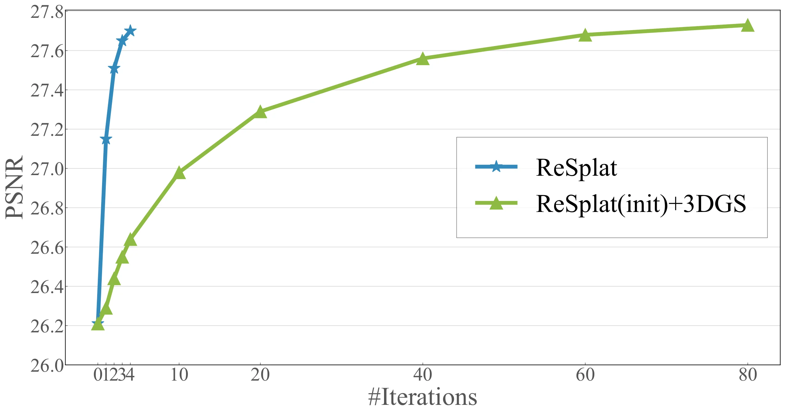
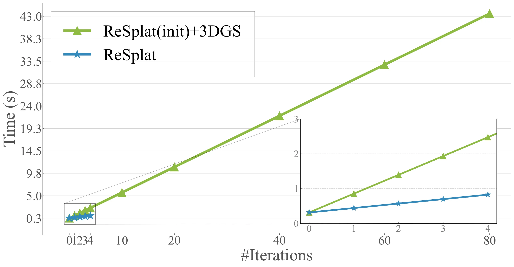
Optimization-based vs feed-forward refinement
这个实验比 Table 1 更能隔离 refinement 机制：初始化完全相同，差别只在后续用 learned updater 还是 3DGS optimizer。结论是 learned prior 能把训练集上积累的更新规律迁移到新场景，用更少步数获得大部分改进。它不能证明无限步 learned update 会优于收敛后的 3DGS；论文恰恰观察到 ReSplat 四轮后趋于饱和。
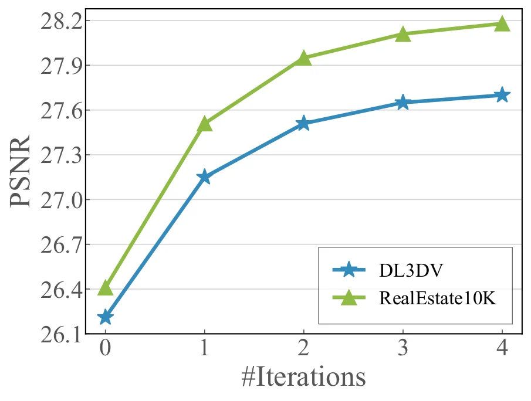
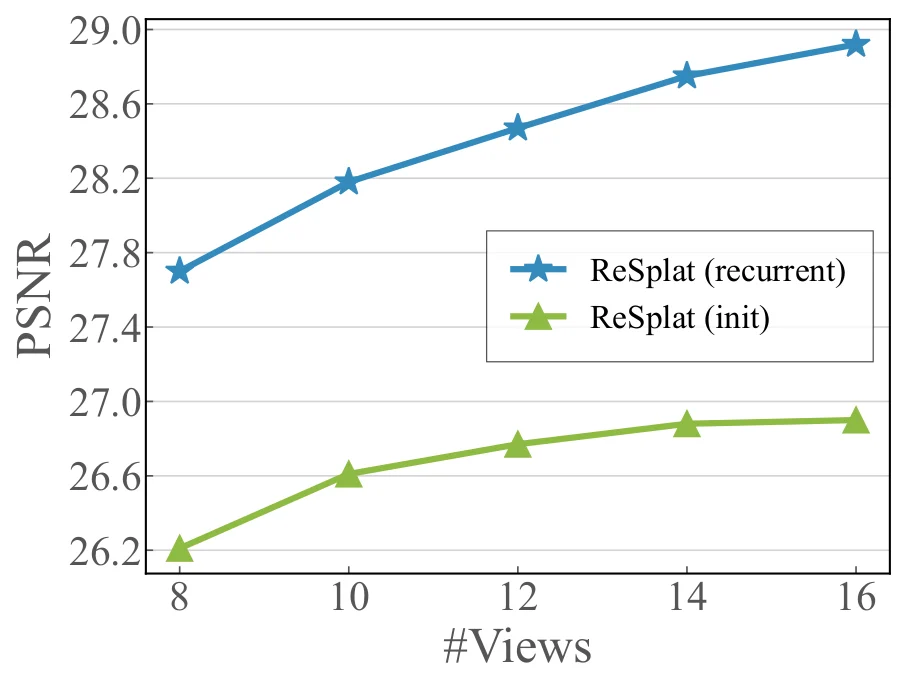
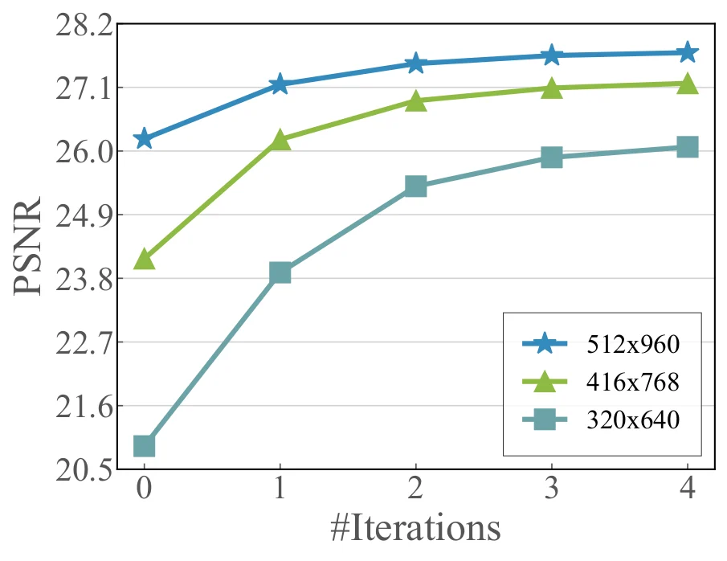
跨数据集、视图数与分辨率
这些实验支持“feedback-based adaptation”而不仅是“更深网络”。输入域变化后，rendering residual 仍以相同物理含义指出当前表示与观测的不一致；更新器因而可以修正初始化的系统性偏差。局限是反馈来自已知输入视图，它不保证不可见区域一定改善，也可能在遮挡、曝光变化或错误相机位姿下产生误导。
Table 2：单步模型 vs recurrent models
| 类别 | 方法 | 参数 | PSNR ↑ | SSIM ↑ | LPIPS ↓ |
|---|---|---|---|---|---|
| Single-step | WorldMirror | 1263M | 23.54 | 0.789 | 0.193 |
| Single-step | ReSplat-Small init | 62M | 26.77 | 0.865 | 0.142 |
| Single-step | ReSplat-Base init | 209M | 27.37 | 0.877 | 0.130 |
| Single-step | ReSplat-Large init | 559M | 27.86 | 0.886 | 0.121 |
| Recurrent | ReSplat-Small，1轮 | 77M | 28.17 | 0.890 | 0.118 |
| Recurrent | ReSplat-Small，2轮 | 77M | 28.73 | 0.898 | 0.110 |
| Recurrent | ReSplat-Small，3轮 | 77M | 28.96 | 0.901 | 0.107 |
| Recurrent | ReSplat-Small，4轮 | 77M | 29.07 | 0.902 | 0.105 |
参数放大不能替代误差纠正
77M 的 Small recurrent 只比其初始化多 15M 参数，一轮就以 28.17 dB 超过 559M 的 Large initialization（27.86）；四轮差距增至 1.21 dB。与 1263M WorldMirror 的差距为 5.53 dB。受控程度最好的是同一 ReSplat family 内的 Small/Base/Large 对比；跨 WorldMirror 的架构和训练差异更大，应作为补充而非单变量证据。
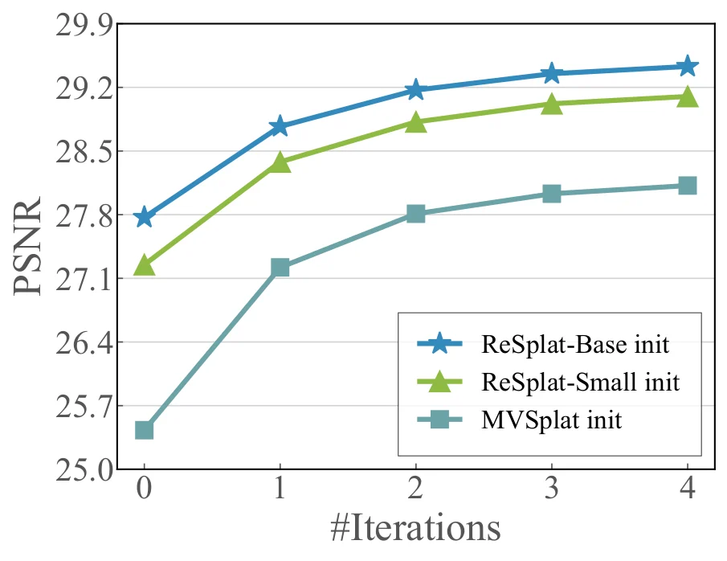
不同初始化的迁移
更新器并非只能修复自己的 Base initialization；它对不同初值都能提供单调改善，支持“rendering error 是通用反馈”这一判断。不过曲线也表明强初始化仍然重要：循环不会完全抹平起点差距，且过多 Gaussians 会使 3D attention 成本急升。
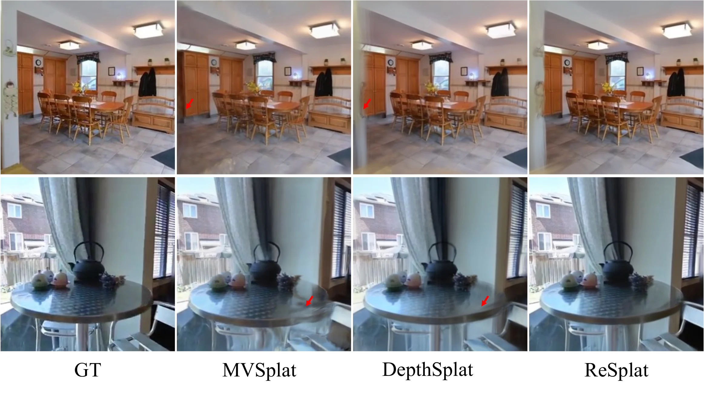
Table 3：DL3DV，16 views，$540\times960$
| 方法 | 迭代 | PSNR ↑ | SSIM ↑ | LPIPS ↓ | 重建时间 | #Gaussians |
|---|---|---|---|---|---|---|
| 3DGS | 30000 | 21.20 | 0.708 | 0.264 | 13 min | — |
| Mip-Splatting | 30000 | 20.88 | 0.712 | 0.274 | 13 min | — |
| Scaffold-GS | 30000 | 22.13 | 0.738 | 0.250 | 16 min | — |
| Long-LRM | 0 | 22.66 | 0.740 | 0.292 | 0.4 s | 2073K |
| ReSplat | 0 | 22.69 | 0.742 | 0.307 | 0.7 s | 518K |
| ReSplat | 1 | 23.23 | 0.758 | 0.291 | 1.2 s | 518K |
| ReSplat | 2 | 23.51 | 0.766 | 0.284 | 1.7 s | 518K |
16-view full-scene reconstruction
该 setting 覆盖更大场景，ReSplat 两轮达到 23.51 dB，比 Long-LRM 高 0.85 dB，Gaussian 数约为其四分之一；但 reconstruction 1.7s 慢于 Long-LRM 的 0.4s，作者将差距主要归因于 kNN。LPIPS 方面 Scaffold-GS 的 0.250 仍最好，说明 ReSplat 并非每个指标都占优。
Table 4：RealEstate10K 两视图
| 方法 | 使用 3DGS 表示 | PSNR ↑ | SSIM ↑ | LPIPS ↓ |
|---|---|---|---|---|
| pixelSplat | 是 | 25.89 | 0.858 | 0.142 |
| MVSplat | 是 | 26.39 | 0.869 | 0.128 |
| DepthSplat | 是 | 27.47 | 0.889 | 0.114 |
| GS-LRM | 是 | 28.10 | 0.892 | 0.114 |
| Long-LRM | 是 | 28.54 | 0.895 | 0.109 |
| LVSM enc-dec | 否 | 28.58 | 0.893 | 0.114 |
| LVSM dec-only | 否 | 29.67 | 0.906 | 0.098 |
| ReSplat | 是 | 29.75 | 0.912 | 0.100 |
两视图配置与结论
两视图的跨视图冗余较低，若仍只保留 $HW/16$ 个 primitives 会过度压缩。因此模型在 $1/2$ 深度网格上取点（空间 $4\times$ subsampling），每点解码 4 个 Gaussians，总数恢复到逐像素量级。ReSplat 在 PSNR/SSIM 最好，LPIPS 比 LVSM dec-only 高 0.002；其显式 Gaussians 支持论文所述约 $20\times$ 更快 rendering，但文章表格没有列出这项计时细节。
Table 5：RealEstate10K → ACID 零样本泛化
| 方法 | PSNR ↑ | SSIM ↑ | LPIPS ↓ |
|---|---|---|---|
| pixelSplat | 27.64 | 0.830 | 0.160 |
| MVSplat | 28.15 | 0.841 | 0.147 |
| DepthSplat | 28.37 | 0.847 | 0.141 |
| GS-LRM | 28.84 | 0.849 | 0.146 |
| ReSplat | 29.87 | 0.864 | 0.135 |
ACID cross-dataset generalization
模型只在 RE10K 训练，直接测试 ACID。ReSplat 比最强表中 baseline GS-LRM 高 1.03 dB、SSIM 高 0.015、LPIPS 低 0.011，支持误差反馈缓解 domain gap。该表没有单独列出“迭代 0 vs 迭代 4”，因此它证明的是完整 ReSplat 的跨域结果，机制归因还需结合 Figure 5 与 Table 6(a)。
4.2 Analysis and Ablation
全部消融使用 ReSplat-Small、DL3DV 8 views、$256\times448$，共同 initialization 为 26.77/0.865/0.142。由于 setting 与 Table 1 不同，29.07 dB 不应与高分辨率 27.70 dB 横向比较。
Table 6 总览
Table 6 分成四个受控面板，分别改变 rendering error、坐标系、initial model context aggregation 与 recurrent model state/attention。四组共同指向一个结论：紧凑表示需要局部+全局 3D context，循环纠错需要当前误差、latent state 和局部更新，而坐标归一化决定这些空间模式是否易于学习。
Table 6(a)：rendering error
| 方法 | PSNR ↑ | SSIM ↑ | LPIPS ↓ |
|---|---|---|---|
| Initialization | 26.77 | 0.865 | 0.142 |
| 无 rendering error | 27.19 | 0.873 | 0.137 |
| 仅 RGB error | 27.90 | 0.882 | 0.130 |
| 仅 feature error | 28.77 | 0.897 | 0.110 |
| RGB/feature concat | 28.93 | 0.900 | 0.106 |
| RGB/feature add | 29.07 | 0.902 | 0.105 |
误差反馈贡献
去掉 error 后更新网络仍能把 26.77 提到 27.19，说明共享 prior 自身可做 refinement；加入完整 error 后达到 29.07，相对无误差高 1.88 dB。feature error 比 RGB 高 0.87 dB，二者融合再增 0.30 dB；addition 比 concat 仅高 0.14 dB，属于较小但一致的三指标改善。
Table 6(b)：coordinate system
| 参考坐标 | PSNR ↑ | SSIM ↑ | LPIPS ↓ |
|---|---|---|---|
| Initialization | 26.77 | 0.865 | 0.142 |
| COLMAP world | 28.14 | 0.886 | 0.116 |
| First view | 28.66 | 0.896 | 0.109 |
| Last view | 28.59 | 0.895 | 0.110 |
| Middle view | 29.07 | 0.902 | 0.105 |
坐标选择的作用
相对原始 COLMAP 坐标，middle-view alignment 提升 0.93 dB。first/last 已能消除场景任意世界坐标，但中间视图进一步缩短到两端的最大变换距离，使点云中心与尺度分布更均衡。这一结论依赖顺序相机轨迹；对无序环拍，“middle”需要按空间中心重新定义。
Table 6(c)：initial reconstruction model
| 方法 | PSNR ↑ | SSIM ↑ | LPIPS ↓ | #Gaussians |
|---|---|---|---|---|
| DepthSplat | 25.79 | 0.861 | 0.134 | 918K |
| Full initialization | 26.77 | 0.865 | 0.142 | 57K |
| 无 kNN attention | 25.30 | 0.833 | 0.178 | 57K |
| 无 global attention | 26.33 | 0.856 | 0.150 | 57K |
| 两者都无 | 24.50 | 0.814 | 0.200 | 57K |
紧凑初始化为何可行
去掉 kNN 下降 1.47 dB，去掉 global attention 下降 0.44 dB，两者都去掉下降 2.27 dB。局部 3D context 是压缩点集恢复表面结构的主力，全局 context 提供额外跨视图一致性。Full initialization 用 57K Gaussians 超过 918K 的 DepthSplat PSNR/SSIM，但 LPIPS 略差 0.008，不能概括为所有指标全面胜出。
Table 6(d)：recurrent model
| 方法 | PSNR ↑ | SSIM ↑ | LPIPS ↓ |
|---|---|---|---|
| Initialization | 26.77 | 0.865 | 0.142 |
| Full | 29.07 | 0.902 | 0.105 |
| 无 state $z^t$ | 27.79 | 0.878 | 0.125 |
| 无 kNN attention | 28.58 | 0.894 | 0.111 |
| 无 global attention | 28.96 | 0.900 | 0.107 |
循环状态与 attention
去掉 latent state 的损失最大：-1.28 dB，说明 59 维显式 Gaussian 参数不足以承载初始化网络的高层信息与迭代历史。去掉 kNN 为 -0.49 dB，去掉 error global attention 为 -0.11 dB；后者绝对差较小，但三项指标一致下降。Figure S5 提供对应的视觉证据。
5. Conclusion
论文最终贡献可以压缩为一个闭环：compact feed-forward initialization 让 3D 更新在高分辨率、多视图下可计算；input-view rendering error 让更新器看到自己的错误；共享权重 recurrent network 把 test-time compute 转成逐步质量提升。实验表明，该组合能减少 Gaussian 数、提高 rendering speed，并增强跨数据集、视图数和分辨率的稳健性。
Acknowledgments
作者感谢 Naama Pearl、Xudong Jiang、Stefano Esposito、Ata Celen 的评论，以及 Yung-Hsu Yang、Kashyap Chitta 的讨论。Andreas Geiger 获 ERC Starting Grant LEGO-3D（850533）和 DFG EXC 2064/1（390727645）支持；工作还获 Swiss AI Initiative / CSCS Alps 项目 a144 支持。
References 的技术范围
原文参考文献完整收录于论文 PDF；本文不逐条重抄 bibliography，而保留其在论证中的四类功能：3DGS/Mip-Splatting/gsplat 提供显式表示与 renderer；pixelSplat、MVSplat、GS-LRM、DepthSplat、Long-LRM 等构成 feed-forward baselines；RAFT、DROID-SLAM、IterMVS 等建立 learning-to-optimize 谱系；DeepView、G3R、QuickSplat、SplatFormer、LIFe-GOM 界定 learned refinement 的相邻方法。所有定量比较仍以对应表格和论文指定实现为准。
Appendix 总览
26 页 arXiv v3 已把补充材料并入同一 PDF。Appendix A 扩展比较与消融，Appendix B 给训练 schedule 和硬件，Appendix C 给更多定性图。附录不是可选旁证：它补充了 8/16/32 视图 scaling、weight sharing、SplatFormer、深度正则 3DGS、反馈特征、压缩率、local kNN 与逐模块 profiling，直接决定对效率和机制的完整判断。
Appendix A. Additional Evaluations
Table S1：8/16/32 views 下与 3DGS 比较
| #Views | 方法 | 类别 | 迭代 | PSNR ↑ | SSIM ↑ | LPIPS ↓ | #Gaussians | 重建时间(s) |
|---|---|---|---|---|---|---|---|---|
| 8 | 3DGS | Optimization | 4000 | 26.44 | 0.841 | 0.134 | 250K | 49 |
| 8 | ReSplat | Feed-Forward | 4 | 29.20 | 0.904 | 0.104 | 57K | 0.21 |
| 16 | 3DGS | Optimization | 4000 | 27.38 | 0.864 | 0.119 | 395K | 70 |
| 16 | ReSplat | Feed-Forward | 4 | 29.01 | 0.900 | 0.105 | 114K | 0.34 |
| 32 | 3DGS | Optimization | 4000 | 27.86 | 0.879 | 0.113 | 522K | 160 |
| 32 | ReSplat | Feed-Forward | 4 | 28.30 | 0.891 | 0.114 | 229K | 0.75 |
View-count scaling
分辨率统一为 $256\times448$。8 与 16 views 时 ReSplat 分别高 2.76/1.63 dB；32 views 时差距缩到 0.44 dB，且 3DGS 的 LPIPS 反而略好 0.001。这说明密集观测能让逐场景优化逐渐追上 learned prior，但 ReSplat 仍快 200 倍以上。随着输入视图增加，作者扩大采样区域以覆盖更大场景，所以三组测试视图并不完全相同，不能把 PSNR 的非单调变化解释为“更多视图使 ReSplat 变差”。
Table S2：recurrent 与 non-recurrent architectures
| 结构 | #Params | PSNR ↑ | SSIM ↑ | LPIPS ↓ |
|---|---|---|---|---|
| Weight-sharing recurrent，iter 1 / block 4 | 13.8M | 28.17 | 0.890 | 0.118 |
| Weight-sharing recurrent，iter 2 / block 4 | 13.8M | 28.73 | 0.898 | 0.110 |
| Weight-sharing recurrent，iter 3 / block 4 | 13.8M | 28.96 | 0.901 | 0.107 |
| Weight-sharing recurrent，iter 4 / block 4 | 13.8M | 29.07 | 0.902 | 0.105 |
| Non-sharing multi-step，stack 1 | 13.8M | 28.17 | 0.890 | 0.118 |
| Non-sharing multi-step，stack 2 | 27.6M | 28.74 | 0.898 | 0.109 |
| Non-sharing multi-step，stack 3 | 41.4M | 28.72 | 0.898 | 0.110 |
| Non-sharing multi-step，stack 4 | 55.2M | 28.71 | 0.897 | 0.110 |
| Non-sharing one-step，block 4 | 13.8M | 28.17 | 0.890 | 0.118 |
| Non-sharing one-step，block 8 | 27.6M | 28.30 | 0.891 | 0.116 |
| Non-sharing one-step，block 12 | 41.4M | 28.36 | 0.893 | 0.115 |
| Non-sharing one-step，block 16 | 55.2M | 28.40 | 0.893 | 0.115 |
为什么共享权重更好
把四步换成四套独立网络会把参数增至 55.2M，却在第二步后停滞在约 28.7 dB；把单步网络加深到 16 blocks 也只有 28.40 dB。共享模型的 13.8M 参数重复四次达到 29.07。作者将其解释为 weight sharing 的隐式正则化；从信息流看，它还迫使每一步学习同一种“读取当前误差并修正”的通用算子，而不是把第几步固化进权重。它同时允许推理时改变迭代数。
Table S3：SplatFormer
| 方法 | PSNR ↑ | SSIM ↑ | LPIPS ↓ |
|---|---|---|---|
| SplatFormer | 27.03 | 0.868 | 0.140 |
| ReSplat | 29.07 | 0.902 | 0.105 |
Scene-level SplatFormer comparison
作者列出四项结构差异：ReSplat 使用 rendering error；是共享多步 recurrent；初始化与 refinement 都是 feed-forward；目标是复杂 scene-level 数据。SplatFormer 依赖 Point Transformer V3 的 grid serialization，object-centric 数据可归一化到 $[-1,1]$，无界场景却难选统一 grid size。作者尝试不同 normalization 和 grid search 后报告最佳值，ReSplat 高 2.04 dB。由于 baseline 适配困难，这张表既说明实用差距，也暴露了实现公平性的限制，不能简化为架构本身的纯粹单变量胜负。
Table S4：depth-regularized sparse-view 3DGS
| 方法 | PSNR ↑ | SSIM ↑ | LPIPS ↓ | 重建时间(s) |
|---|---|---|---|---|
| 3DGS，无 depth loss | 23.46 | 0.770 | 0.224 | 70.0 |
| 3DGS，有 depth loss | 24.54 | 0.796 | 0.204 | 75.4 |
| ReSplat，无外部 depth loss | 27.70 | 0.868 | 0.160 | 0.8 |
稀疏视图优化的额外先验
3DGS 加入 Depth Anything V2-Large 估计深度与 rendered depth 的损失后提升 1.08 dB，但仍比 ReSplat 低 3.16 dB，且因单目深度估计和 depth rendering 增至 75.4s。ReSplat 的初始化内部确实含深度预测，但不在测试优化时调用外部 monocular depth supervision；论文据此报告约 $94\times$ 重建加速。
Table S5：反馈特征 extractor
| 特征 | #Params | PSNR ↑ | SSIM ↑ | LPIPS ↓ |
|---|---|---|---|---|
| ResNet | 0.7M | 29.07 | 0.902 | 0.105 |
| DINOv2 | 86.6M | 29.00 | 0.901 | 0.107 |
ResNet vs DINOv2
更大的 DINOv2 没有改善，反而轻微下降。作者推测 patch-based features 的空间粒度较粗，而卷积特征更保留 pixel-accurate view synthesis 所需的局部结构。0.07 dB 差距很小且无方差报告，因此可靠结论是“没有观察到升级收益”，而不是普遍证明 ResNet 比 DINOv2 更适合所有 rendering feedback。
Table S6：Gaussian compression factor
| 压缩率 | 深度网格 | PSNR ↑ | SSIM ↑ | LPIPS ↓ | 时间(s) |
|---|---|---|---|---|---|
| $64\times$ | $1/8$ 高宽 | 24.77 | 0.797 | 0.226 | 0.096 |
| $16\times$ | $1/4$ 高宽 | 26.77 | 0.865 | 0.142 | 0.104 |
| $4\times$ | $1/2$ 高宽 | 28.36 | 0.900 | 0.103 | 0.206 |
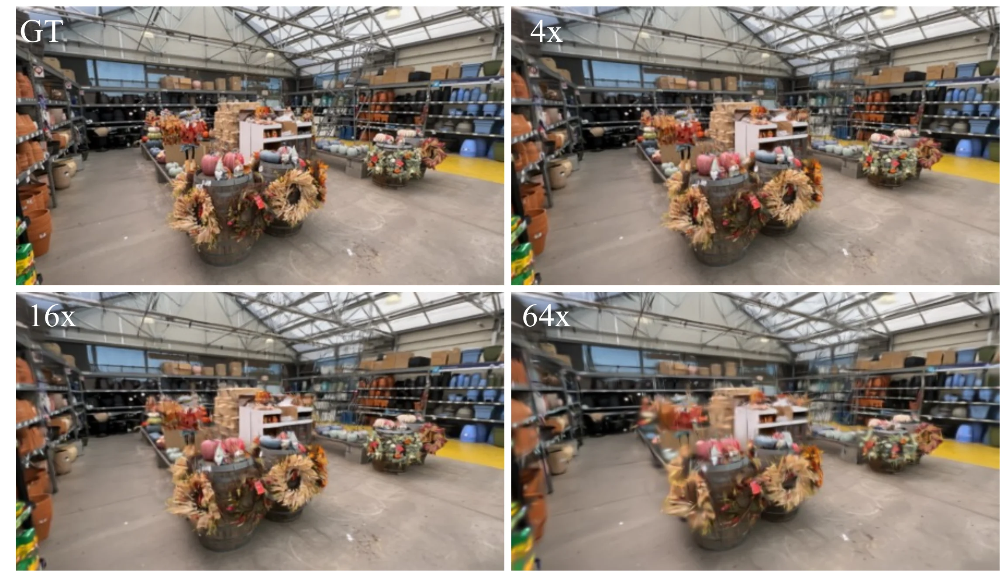
速度—精度折中
从 $64\times$ 放宽到 $16\times$，只增加 0.008s，却提升 2.00 dB；再放宽到 $4\times$，提升 1.59 dB，但时间近乎翻倍。在 $512\times960$ 等更高分辨率下，3D attention 的额外点数代价会更明显。因此多视图主模型选 $16\times$；低分辨率双视图因信息冗余少，改用 $4\times$ 并每点解码四个 Gaussians。
Table S7：global vs local kNN
| kNN | PSNR ↑ | SSIM ↑ | LPIPS ↓ | 总时间(s) |
|---|---|---|---|---|
| Global | 27.70 | 0.868 | 0.160 | 0.816 |
| Local | 27.65 | 0.867 | 0.163 | 0.591 |
Camera-aware local kNN
在 8×$512\times960$、246K Gaussians 上，local 方案把总推理时间从 0.816s 降到 0.591s，约快 27.6%，代价为 -0.05 dB、SSIM -0.001、LPIPS +0.003。它利用“表面近邻通常来自同视图邻近像素，或其他视图中的重投影邻域”这一多视图网格先验。若相机位姿错误、投影落在遮挡表面，候选集可能漏掉真实 3D 邻居；global kNN 质量略高但规模不可持续。
Table S8：Model Profiling
作者在 8 views、两种分辨率下拆解初始模型和单次 recurrent model 的 latency。各分量之和与 total 基本一致，能够定位后续优化的优先级。
Table S8(a)：Initial model
| 分辨率 | Total | Depth pred. | kNN attn | Global attn | Gaussian head |
|---|---|---|---|---|---|
| $256\times448$ | 0.149 | 0.111 | 0.024 | 0.013 | 0.001 |
| $512\times960$ | 0.311 | 0.197 | 0.094 | 0.018 | 0.002 |
Table S8(b)：Single recurrent step
| 分辨率 | Total | Render error | kNN attn | Global attn | Update head |
|---|---|---|---|---|---|
| $256\times448$ | 0.022 | 0.003 | 0.015 | 0.002 | 0.002 |
| $512\times960$ | 0.126 | 0.016 | 0.092 | 0.008 | 0.010 |
Profiling 结论
初始化阶段的最大项是 depth prediction（高分辨率约占 63%）；单次 recurrent step 的最大项是 kNN attention（约占 73%）。global attention 经压缩后并非主要瓶颈。分辨率增大时 kNN 从 0.024→0.094 和 0.015→0.092，增长显著快于 head，说明 local kNN 或更高效邻域索引是最直接的工程方向。
Appendix B. Additional Details
Training Details
所有实验使用 cosine learning-rate schedule。DL3DV 采用 progressive training：先 8 views、$256\times448$；再 fine-tune 到 8 views、$512\times960$；最后 fine-tune 到 16 views、$512\times960$。每个阶段用 16 张 NVIDIA GH200 训练 80K steps，其中 initial reconstruction 50K，recurrent model 30K。RealEstate10K $256\times256$ 先用 16 GH200 训练 initial model 200K steps，再训练 recurrent model 100K steps。
复现边界“每阶段 80K”描述的是渐进阶段的总训练结构；具体 checkpoint 继承、batch accumulation、学习率与数据 sampler 仍由公开 shell/YAML 决定。硬件规模很大，论文没有提供单卡等效时长或能耗。
Appendix C. Additional Visualizations
Appendix C 不新增指标，而是把主文中的迭代趋势、baseline 差异和两类 attention 消融落到更多场景。阅读定性图时应关注跨视图几何一致性、细线/边缘、重复纹理与残差热区，而不是只看单张图的主观锐度。
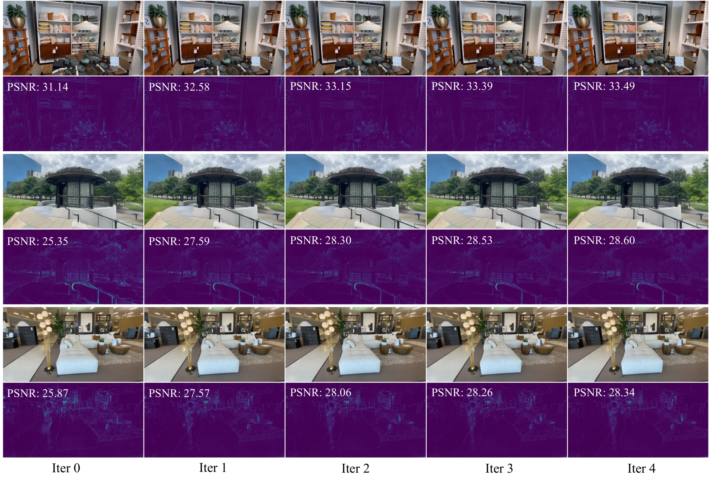
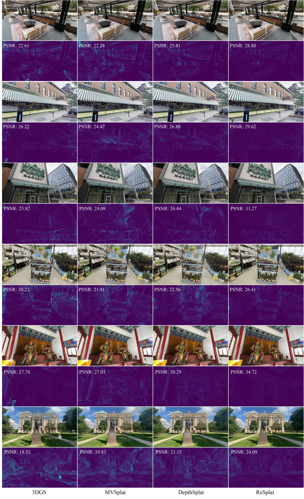
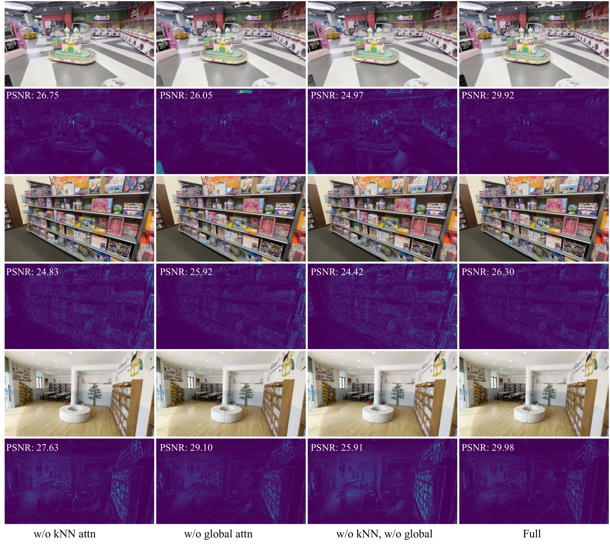
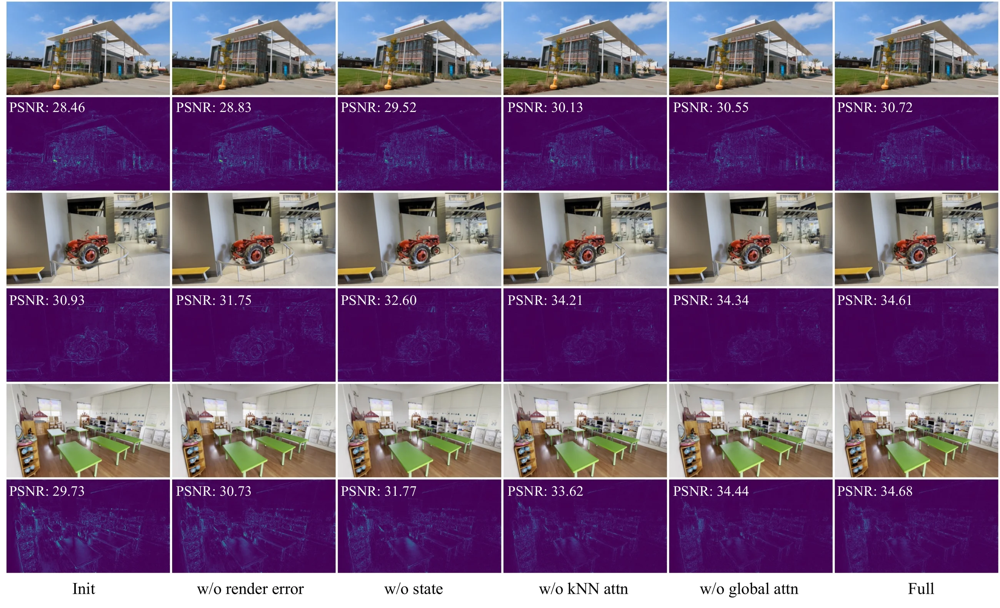
独立 Supplement 状态
项目页与 arXiv source package 没有发布另一个独立 supplementary 文件。论文指向的全部补充实验、训练细节与可视化已整合进 26 页 arXiv v3 的 Appendix A–C，本文已逐项覆盖；因此该预留项标记为 not applicable，不是资料抓取失败。
官方代码逐模块核对
以下核对基于官方仓库 commit cc4594af97a2e559e98f5e307d80535569ae7007。代码用于澄清执行边界，不把实现细节反向包装成论文明确声称。
1. Depth and multi-view feature encoder
官方代码encoder_resplat.py 复用 DepthSplat 式 monocular/multi-view depth features，按照配置选择 ViT-S/B/L 和 feature channels。深度、图像 feature pyramid 与相机几何共同进入后续反投影，而非仅从 RGB 直接回归 59 维参数。
2. Compact Gaussian initialization
encoder_resplat.py 初始化路径 将低分辨率 depth unproject 为 3D points，交给交替 point/global transformer，再经 Gaussian adapter/head 生成 means、covariances、SH 与 opacities。gaussian_adapter.py 负责把网络原始输出变成 renderer 可用、满足范围约束的参数。
3. Pixel/feature rendering error
encoder_resplat.py 的 error branch 先渲染 context views，再构造 RGB difference；冻结 ResNet-18 的前三阶段特征被 resize 到统一尺度后相减。RGB 经 pixel-unshuffle、linear projection 与 normalization 后和 feature error 相加，和 Equation (5)、Table 6(a) 一致。
4. Recurrent state transition
recurrent path 明确对上一轮 Gaussian attributes 执行 detach()，随后 global error propagation、$k$NN update blocks 和 MLP heads 预测增量。point_transformer/layer.py 实现局部/global attention；local_knn.py 实现 camera-aware 候选生成。
5. Two-stage loss and gradient boundary
model_wrapper.py training path 区分 init 与 refine 两阶段；refine 阶段以 torch.no_grad() 调用已训练初始化模型，再对各轮 target rendering 施加指数权重损失。loss modules 实现像素/perceptual supervision 与配置组合。由此可确认：初始化被冻结，recurrent network 仍通过 backprop 学习，但测试更新无显式 per-scene gradient。
6. gsplat-based renderer
gsplat_decoder_splatting_cuda.py 将 Gaussian means、covariances、SH、opacities 与相机参数交给 gsplat rasterization，支持 RGB 与 depth 输出。renderer 同时服务于反馈回路和 target-view loss；推理无需为反馈图构建参数梯度图。
7. DL3DV / RealEstate10K data pipeline
src/dataset 分别提供 DL3DV 与 RE10K loaders、crop/augmentation shims 和 bounded/evaluation view samplers。batch 显式区分 context 与 target：context images 产生 Gaussians 并形成 rendering feedback，target images 用于新视图监督/评估。相机 normalization 代码把 poses 变到选定 pivotal camera 坐标。
8. Training scripts and presets
scripts/ 为 DL3DV 8/16/32-view、Small/Base/Large、RE10K 2-view 分别提供 init/refine shell scripts；config/ 保存 experiment、dataset、model 与 loss overrides。这与论文的 progressive schedule 对应，也说明不同表格不是一个 checkpoint 无条件覆盖全部 setting。
9. COLMAP inference and test-time execution
scripts/infer_colmap.py 可读取 COLMAP binary/text cameras 与 images，提供 8-view $512\times960$、16-view $540\times960$ 等 presets；batch 构建时以 middle context view 对齐 poses，num_refine 可设 0–4，并可保存 images、video 与 PLY。model_wrapper.py test path 执行相同初始化—循环—渲染流程及 sliding-window 选项。
完整结论：证据支持到哪里
- 已被主结果直接支持：在论文给定协议下，compact initialization 可以用远少于逐像素方法的 Gaussians 获得更高质量；1–4 次 learned refinement 持续改善，且远快于数千步 optimization。
- 已被机制消融支持：rendering error 是主要增益来源，feature error 强于纯 RGB；hidden state、局部 $k$NN、global context 与 middle-view coordinate normalization 都有贡献。
- 已被泛化实验支持：同一更新机制能缓解 dataset、view-count 与 resolution shift；但不可见区域、错误位姿、动态物体与曝光变化并未被系统压力测试。
- 不能从论文推出：ReSplat 会随无限迭代收敛到 per-scene optimum；它完全不使用梯度训练；固定 Gaussian 数足以恢复任意复杂拓扑；所有 setting 都保持 $16\times$ 总 Gaussian 压缩。
覆盖审计
| 类别 | 台账单元 | 状态 | 说明 |
|---|---|---|---|
| 正文结构、主张、定义与限制 | 28 | 全部覆盖 | Abstract、Sections 1–5、Related Work 三分支、方法组件、结论与两项 limitation |
| 公式 | 11 | 全部覆盖 | Equation (1)–(11)，含符号、执行顺序和梯度边界 |
| Figures | 12 | 全部覆盖 | Figure 1–7 与 Figure S1–S5；15 个源图文件均已嵌入 |
| Tables / panels | 20 | 全部覆盖 | Table 1–6、S1–S8 及承担独立结论的 6 个子面板 |
| 实验与设置 | 27 | 全部覆盖 | 20 类实验与 7 组实现/评估/训练设置 |
| Appendix / supplement | 5 | 4 covered + 1 not applicable | Appendix overview、A–C；无独立 supplementary 文件 |
| 官方代码映射 | 9 | 全部覆盖 | 固定到官方 commit cc4594a |
| 合计 | 112 | 111 covered，1 not applicable | 无 pending / unavailable |